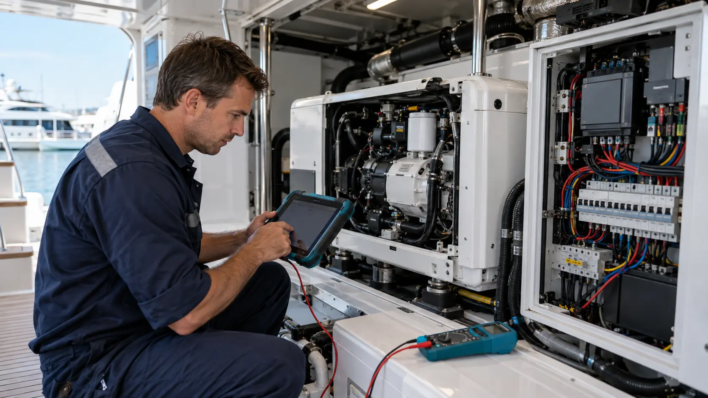

Ölçüm odaklı teknik servis
Marin jeneratör servisi
Jeneratörünüzün mekanik, elektrik ve kontrol sistemlerini birlikte değerlendiriyor; bakım, arıza tespiti ve onarımı tek teknik süreçte yönetiyoruz.
Kesintisiz enerji için doğru teşhis.
Düşük çıkış, düzensiz çalışma, aşırı ısınma ve çalışmama gibi sorunlarda mekanik parçalarla elektrik-elektronik bileşenleri beraber kontrol ediyoruz.
Sık sorulan sorular
Servis kapsamı
Bilgi
Marka, model ve arıza belirtisi alınır.
Ölçüm
Mekanik ve elektrik değerleri kontrol edilir.
Çözüm
Bakım veya onarım planı uygulanır.
Test
Yük altında son kontroller tamamlanır.